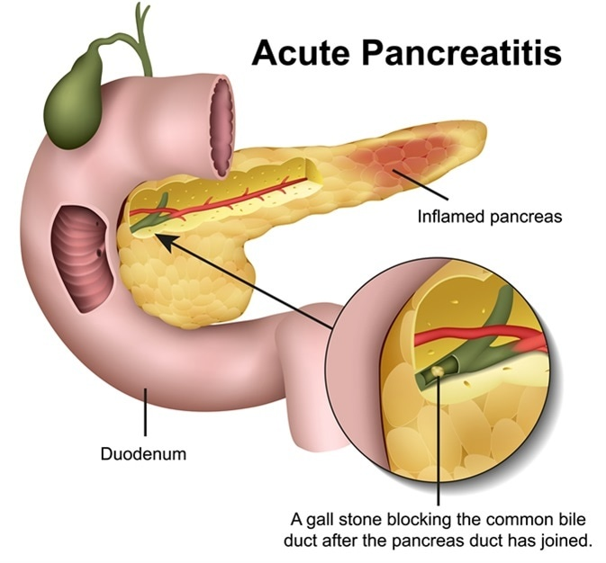

Pancreatitis

SYMPTOMS:
Acute pancreatitis signs and symptoms include:
- Upper abdominal pain
-
Abdominal pain that radiates to your back
-
Abdominal pain that feels worse after eating
-
Fever
-
Rapid pulse
-
Nausea
-
Vomiting
Chronic pancreatitis signs and symptoms include:
- Upper abdominal pain
-
Losing weight without trying
-
Oily, smelly stools (steatorrhea)
CAUSES
Conditions that can lead to pancreatitis include:
- Abdominal surgery
-
Alcoholism
-
Certain medications
-
Cystic fibrosis
-
Gallstones
-
High calcium levels in the blood (hypercalcemia), which may be caused by an overactive parathyroid gland
-
High triglyceride levels in the blood (hypertriglyceridemia)
-
Infection
-
Injury to the abdomen
-
Obesity
-
Pancreatic cancer